Compile weather records near the Rocky Mountain Biological Laboratory in Gothic, CO and analyze long-term trends in precipitation and temperature.
library(tidyverse)
library(lubridate)
library(viridis)
library(RColorBrewer)
library(GGally)
library(ggpmisc)
library(knitr)
library(kableExtra)
knitr::opts_chunk$set(comment="", cache=T, warning = F, message = F, fig.path = "images_weather/")
maxfield_coords <- data.frame(id = "maxfield", name="MaxfieldMdw", latitude = 38.9495, longitude = -106.9908)Weather data from 7 RMBL stations
wrcc_metadata_noflags <- read_tsv("data/WRCC/weather_wrcc_metadata.tsv") %>% mutate(index = row_number(), flag=F)
wrcc_metadata <- bind_rows(wrcc_metadata_noflags, wrcc_metadata_noflags %>% select(name_metric, col_type, index) %>%
filter(! name_metric %in% c("date","time")) %>%
mutate(name_metric=paste0("flag_",name_metric), col_type="f",flag=T)) %>% arrange(index) %>% fill(id)
#the chunk below loads the WRCC data (slow)
load("data/WRCC/daily_WRCC.rda")get_WRCC_id <- function(filename) toupper(str_match(filename, "wrcc_([a-z]+)")[,2])
tenmin_WRCC <- list.files("data/WRCC/", ".tsv.gz", full.names=T) %>% set_names(get_WRCC_id(.)) %>%
map_dfr( ~ read_tsv(.x, skip = 4, na=c("","M"), col_types=paste0(filter(wrcc_metadata, id==get_WRCC_id(.x))$col_type, collapse=""),
col_names=filter(wrcc_metadata, id==get_WRCC_id(.x))$name_metric), .id="id")
#this comment says to "take the mean of the precip rate per hour that is reported every 10 min", but the code sums it and that matches well on the monthly scale with other stations
hourly_WRCC <- tenmin_WRCC %>% mutate(hour=hour(time)) %>% group_by(id, date, hour) %>%
summarize(precip_mm = sum(precip_mm), across(where(is.numeric), mean))
get_daily_WRCC <- function(grouped_hourly_data) {
daily <- grouped_hourly_data %>% group_by(id, .add=T) %>%
summarize(precip_mm = sum(precip_mm), #sum the hourly precip rates over each 24 hrs
max_av_temp_air_C = max(av_temp_air_C), min_av_temp_air_C = min(av_temp_air_C),
across(where(is.numeric), mean)) %>%
mutate(year=factor(year(date)), julian=yday(date),
precip_mm = ifelse(precip_mm>50 | precip_mm < 0, NA, precip_mm)) #cut nonsense precip values
}
daily_WRCC <- hourly_WRCC %>% group_by(date) %>% get_daily_WRCC()
daily_WRCC_7am <- hourly_WRCC %>% filter(id %in% c("CORBIL", "CORKET")) %>%
group_by(date = case_when(hour < 7 ~ date - days(1), hour >= 7 ~ date)) %>% get_daily_WRCC() %>%
select(id, date, year, julian, precip_mm)
save(daily_WRCC, daily_WRCC_7am, file="data/WRCC/daily_WRCC.rda")Weather data from the Gold Link Wunderground station in Mt. Crested Butte
hourly_KCOMTCRE2 <- read_csv("data/Wunderground/2011_2020_KComCret_60min_Measured_QAQC.csv", guess_max = 3000)
daily_KCOMTCRE2 <- read_csv("data/Wunderground/2011_2020_KComCret_1day_ETModeled.csv")
daily_KCOMTCRE2_7am <- hourly_KCOMTCRE2 %>%
group_by(date = case_when(hr < 7 ~ date - days(1), hr >= 7 ~ date)) %>%
summarize(Precip = sum(PrecipRate)*60) #units are mm/min
daily_KCOMTCRE2_raw <- hourly_KCOMTCRE2 %>% group_by(date) %>%
summarize(Sum_PrecipRate = sum(PrecipRate)*60, Max_PrecipAccum = max(PrecipAccum))
ggplot(daily_KCOMTCRE2_raw) + geom_point(aes(x=Max_PrecipAccum, y=Sum_PrecipRate)) + coord_cartesian(ylim=c(0,50))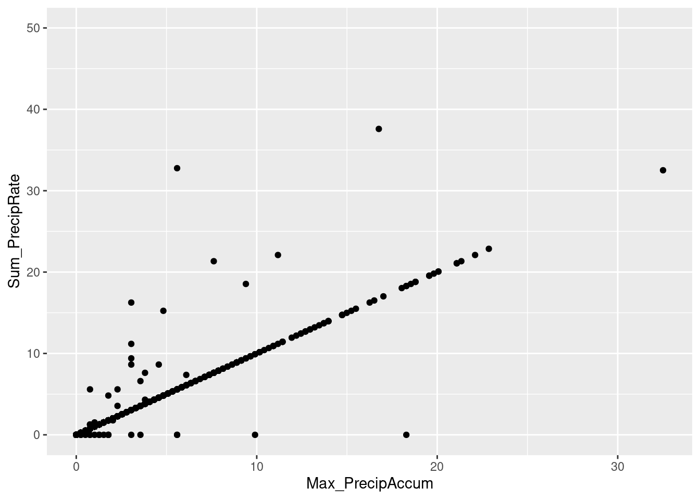
#hourly_KCOMTCRE2 %>% filter(date %in% (daily_KCOMTCRE2_raw %>% filter(abs(Max_PrecipAccum - Sum_PrecipRate > 0.01)) %>% #pull(date))) %>% ViewWeather data from the RMBL Research Meadow
hourly_GTH161 <- read_csv("data/EPA_CASTNET/CASTNET_GTH161_Meteorological_Hourly.csv.gz",
col_types=cols(DATE_TIME=col_datetime("%m/%d/%Y %H:%M:%S"), QA_CODE=col_character()))
# Tally and plot missing hourly values
hourly_GTH161_missing <- hourly_GTH161 %>% filter(DATE_TIME < ymd("2012-01-01")) %>%
group_by(date=date(DATE_TIME)) %>% summarize(missing_precip_hrs = sum(is.na(PRECIPITATION)))
ggplot(hourly_GTH161_missing, aes(x=date, y=missing_precip_hrs)) + geom_point() +
geom_text(data = hourly_GTH161_missing %>% count(missing_precip_hrs), aes(x=ymd("1988-01-01"), label=n))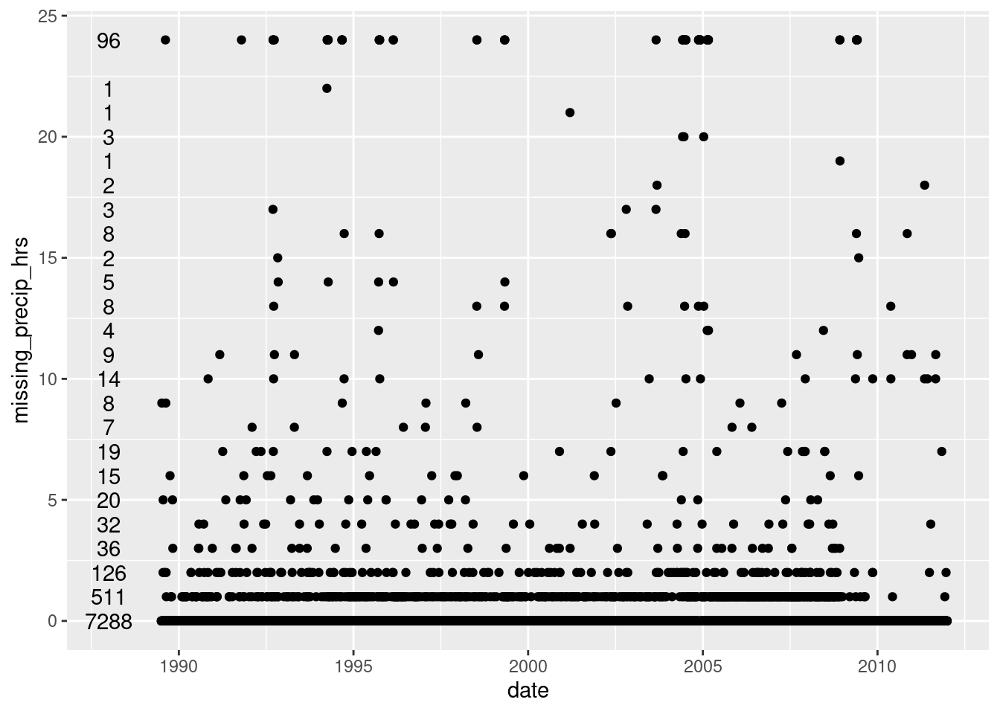
# daily_GTH161 is used for daily_all, but
# this keeps precip sums when there is missing hourly values
# an entire day missing gets precip = 0 and temperature = NaN
daily_GTH161 <- hourly_GTH161 %>% mutate(date = date(DATE_TIME)) %>% filter(year(date) < 2012) %>% group_by(date) %>%
summarize(TEMPERATURE=mean(TEMPERATURE, na.rm=T), PRECIPITATION = sum(PRECIPITATION, na.rm=T))
# daily_GTH161_NA propagates any missing hourly values up to the day.
daily_GTH161_NA <- hourly_GTH161 %>% arrange(DATE_TIME) %>% group_by(date = date(DATE_TIME)) %>%
summarize(tavg_C=mean(TEMPERATURE), tmax_C=max(TEMPERATURE), tmin_C=min(TEMPERATURE),
prcp_mm = sum(PRECIPITATION), across(where(is.numeric), mean))
# Could be customized to accept a few missing hours with maxNA:
#summarizeNA <- function(x, fun, maxNA = 0) {
# ifelse(sum(is.na(x)) <= maxNA, fun(x, na.rm=T), NA)
#}
# daily_GTH161_NA_7am counts precipitation occurring BEFORE 7 am as the previous day, to
# line up with CoCoRaHs datasets that I shifted one day back
daily_GTH161_NA_7am <- hourly_GTH161 %>% arrange(DATE_TIME) %>%
group_by(date = case_when(hour(DATE_TIME) < 7 ~ date(DATE_TIME) - days(1),
hour(DATE_TIME) >= 7 ~ date(DATE_TIME))) %>%
summarize(tavg_C=mean(TEMPERATURE), tmax_C=max(TEMPERATURE), tmin_C=min(TEMPERATURE),
prcp_mm = sum(PRECIPITATION), across(where(is.numeric), mean)) Weather data from 7 stations near RMBL sourced from NOAA’s GHCN Daily dataset.
library(rnoaa)
station_data <- ghcnd_stations()# long download unless cached
NOAA_stations <- meteo_nearby_stations(lat_lon_df = maxfield_coords, station_data = station_data,
var = c("PRCP", "TAVG"), radius = 10)$maxfield %>% #stations within 10 km radius of Maxfield
left_join(station_data %>% filter(element=="PRCP")) %>%
mutate(CoCoRaHS = str_sub(id,1,3) == "US1")
remove(station_data)
NOAA_stations_name <- with(NOAA_stations, set_names(name, id))
NOAA_stations_morning <- NOAA_stations %>% filter(CoCoRaHS) %>% pull(id) %>% c("USC00051959") #Crested Butte is collected in the morning too, at 9am
daily_NOAA <- meteo_pull_monitors(NOAA_stations$id, keep_flags = T) %>%
mutate(across(contains("flag"), as.factor)) %>% #All units are in tenths of mm, converted to mm here.
mutate(across(c("prcp","snow","snwd","wesd","wesf"), ~ as.integer(.x)/10, .names="{.col}_mm"), .keep="unused") %>%
mutate(across(c("tmin","tavg","tmax"), ~ as.integer(.x)/10, .names="{.col}_C"), .keep="unused") %>%
mutate(date = case_when(id %in% NOAA_stations_morning ~ date - days(1), TRUE ~ date)) %>% # CoCoRaHS stations are recorded the next day at 7 am (and CB at 9 am), so set them back a day
mutate(prcp_mm = ifelse(id=="USC00051959" & date %in% c(ymd("2000-08-03"),ymd("2018-07-28")), NA, prcp_mm)) #cut 2 extreme precip values at CB station not recorded by other stationsCommunity precipitation monitoring stations using manual gauges emptied in the morning (around 7 am local).
daily_CoCoRaHS <- read_csv("data/NOAA_GHCN/CoCoRaHS_DailyPrecipReports_CO_GN.csv", guess_max=1e4) %>%
mutate(across(TotalPrecipAmt:TotalSnowSWE, ~25.4*as.numeric(.x)),# T(race) to NA, convert inches to mm
across(starts_with("Station"), factor))
ggplot(daily_CoCoRaHS, aes(x=ObservationDate, y=StationName, fill=TotalPrecipAmt)) + geom_tile()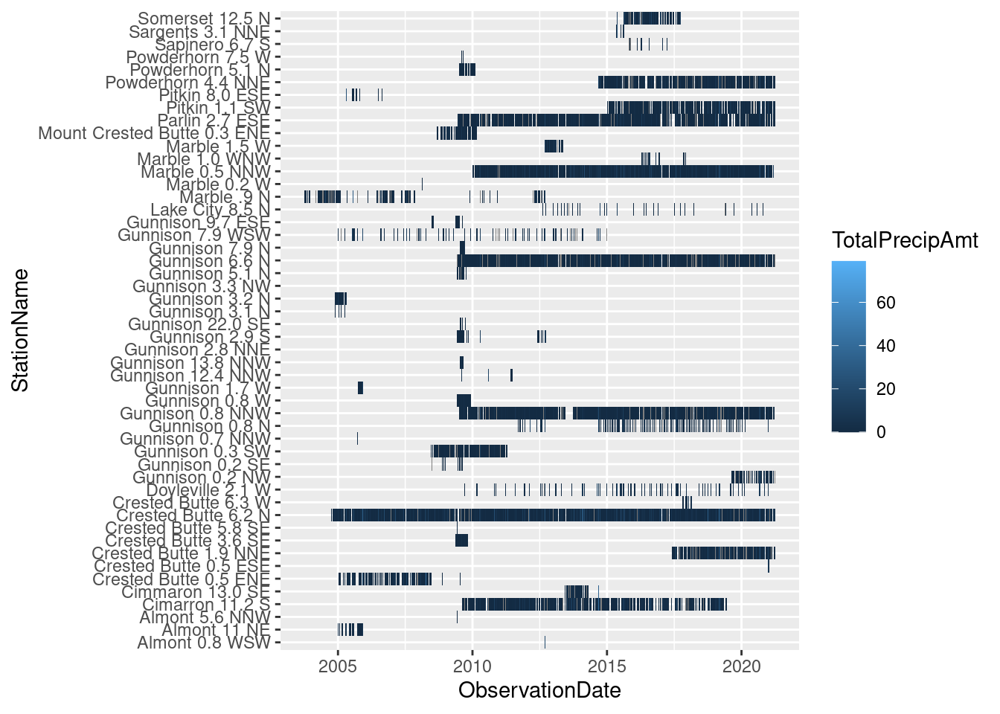
ggplot(daily_CoCoRaHS, aes(x=ObservationTime, y=StationName)) + geom_point(shape=1, alpha=0.2)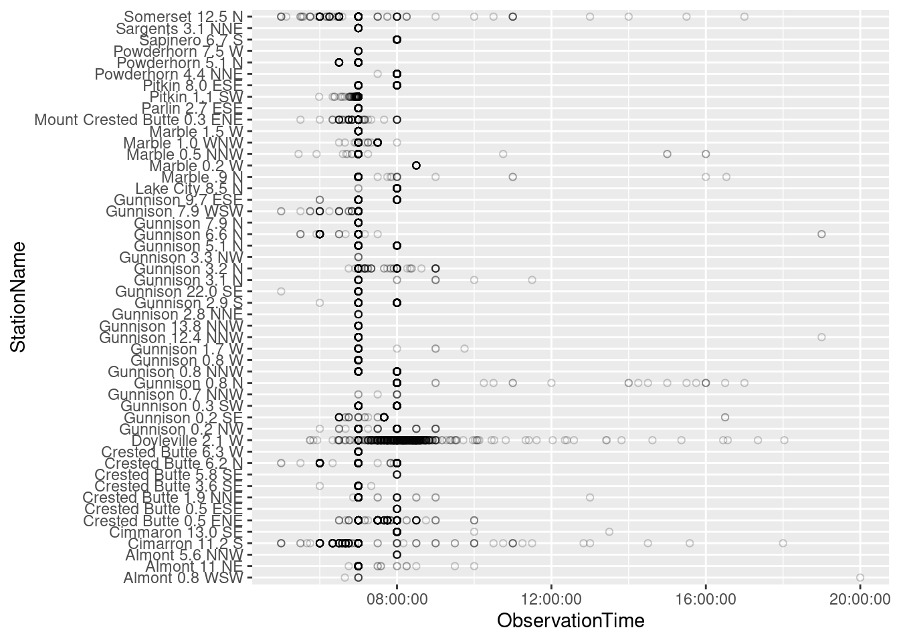
CoCoRaHS_stations <- daily_CoCoRaHS %>% group_by(StationName, StationNumber) %>%
summarize(across(c(Latitude, Longitude), unique), medianObservationTime=median(ObservationTime)) %>%
left_join(read_tsv("data/NOAA_GHCN/CoCoRaHS_Stations_CO_GN.tsv"))
CoCoRaHS_stations %>% mutate(StationNumber = cell_spec(StationNumber, "html", link = Link), .keep="unused") %>%
select(-c(Type, State, County, OldStationNumber)) %>% filter(Active=="Yes") %>%
kable("html", escape = FALSE) %>% kable_styling(bootstrap_options = c("hover", "condensed")) | StationName | StationNumber | Latitude | Longitude | medianObservationTime | Active |
|---|---|---|---|---|---|
| Cimarron 11.2 S | CO-GN-47 | 38.28847 | -107.5550 | 07:00:00 | Yes |
| Crested Butte 0.5 ESE | CO-GN-70 | 38.86734 | -106.9741 | 08:00:00 | Yes |
| Crested Butte 1.9 NNE | CO-GN-66 | 38.89471 | -106.9685 | 07:00:00 | Yes |
| Crested Butte 6.2 N | CO-GN-18 | 38.96030 | -106.9908 | 07:00:00 | Yes |
| Crested Butte 6.3 W | CO-GN-67 | 38.87571 | -107.0998 | 07:00:00 | Yes |
| Doyleville 2.1 W | CO-GN-49 | 38.42486 | -106.6192 | 08:00:00 | Yes |
| Gunnison 0.2 NW | CO-GN-68 | 38.54689 | -106.9296 | 07:00:00 | Yes |
| Gunnison 0.8 N | CO-GN-52 | 38.55570 | -106.9286 | 08:00:00 | Yes |
| Gunnison 0.8 NNW | CO-GN-41 | 38.54020 | -106.9238 | 08:00:00 | Yes |
| Gunnison 2.8 NNE | CO-GN-71 | 38.58036 | -106.9031 | 07:00:00 | Yes |
| Gunnison 6.6 N | CO-GN-40 | 38.63912 | -106.9408 | 07:00:00 | Yes |
| Lake City 8.5 N | CO-GN-54 | 38.15131 | -107.2982 | 08:00:00 | Yes |
| Marble 0.5 NNW | CO-GN-50 | 39.07911 | -107.1906 | 07:00:00 | Yes |
| Parlin 2.7 ESE | CO-GN-39 | 38.48433 | -106.6742 | 07:00:00 | Yes |
| Pitkin 1.1 SW | CO-GN-59 | 38.59850 | -106.5313 | 07:00:00 | Yes |
| Powderhorn 4.4 NNE | CO-GN-58 | 38.34010 | -107.0943 | 08:00:00 | Yes |
Weather data from the Global Surface Summary of the Day (GSOD)
library(GSODR)
gsodr.inventory <- get_inventory() %>% #long download
filter(STNID %in% nearest_stations(38.9495, -106.9908,50))billy barr’s snow records in Gothic, CO
groundcover <- read_tsv("./data/gothicwx/groundcover.tsv") %>%
mutate(across(starts_with("first"), list(day=yday)), year=year(first_0_cm))
groundcover_2021 <- tibble(first_snow=ymd("2020-10-25"), first_0_cm=ymd("2021-05-01"))
#TODO check this first permanent snow of 2020 (not yet on billy's website), and fill in actual value for first_0_cm
get_seasons <- function(dates) {
factor(c("smmr","wntr"))[ifelse(year(dates) < min(groundcover$year), NA,
1+dates %in% do.call(c,
map2(bind_rows(groundcover, groundcover_2021)$first_snow,
bind_rows(groundcover, groundcover_2021)$first_0_cm,
~ seq(date(.x), date(.y), by="day"))))]
}Combine selected daily weather station data in long or wide format.
#Combine a few of the closer weather station precipitation datasets and snowmelt in wide format
daily_all <-
daily_NOAA %>% filter(id == "US1COGN0018") %>%
full_join(daily_GTH161) %>% full_join(daily_KCOMTCRE2) %>%
full_join(daily_WRCC %>% filter(id=="CORBIL"), by="date") %>%
rename(EPA_RsrchMdw=PRECIPITATION, ESSDIVE_GoldLink=Precip, WRCC_billy=precip_mm, NOAA_billy=prcp_mm) %>%
mutate(yr = year(date), mo = month(date, label=F),
ground_covered = get_seasons(date)) %>% filter(year(date) < 2021)
#Combine all the weather stations daily precip and temperature statistics in long format
daily_long <- bind_rows(
GTH161 = daily_GTH161_NA %>% select(date, tavg_C, tmax_C, tmin_C, prcp_mm),
KCOMTCRE2 = daily_KCOMTCRE2 %>% select(date, tavg_C = Tmean, tmax_C = Tmax, tmin_C = Tmin, prcp_mm = Precip),
.id="id") %>%
bind_rows(daily_WRCC %>% select(id, date, tavg_C = av_temp_air_C,
tmax_C = max_av_temp_air_C, tmin_C = min_av_temp_air_C,
prcp_mm = precip_mm)) %>%
bind_rows(daily_NOAA %>% select(id, date, tavg_C, tmax_C, tmin_C, prcp_mm)) %>% mutate(id=factor(id))%>% filter(year(date) < 2021)
# The datasets summarized to line up with the morning collections
daily_long_7am <- bind_rows(
GTH161 = daily_GTH161_NA_7am %>% select(date, prcp_mm),
KCOMTCRE2 = daily_KCOMTCRE2_7am %>% select(date, prcp_mm = Precip), .id="id") %>%
bind_rows(daily_WRCC_7am %>% select(id, date, prcp_mm = precip_mm)) %>%
bind_rows(daily_NOAA %>% select(id, date, prcp_mm)) %>% # morning stations shifted back a day
mutate(ground_covered = get_seasons(date)) %>% filter(year(date) < 2021)
daily_all_7am <- daily_long_7am %>%
pivot_wider(names_from="id", values_from="prcp_mm") %>% arrange(date)List the weather station metadata
all_stations <- bind_rows(
NOAA_stations %>% mutate(source="NOAA", url=paste0("https://www.ncdc.noaa.gov/cdo-web/datasets/GHCND/stations/GHCND:",id,"/detail")),
read_tsv("data/stations.tsv") %>%
rnoaa::meteo_process_geographic_data(lat = maxfield_coords$latitude, long = maxfield_coords$long) %>%
mutate(element="PRCP")) %>%
mutate(source_name = paste(source, name, sep="_"),
short_name = str_replace(name, "CRESTED BUTTE","CB"),
color = c(brewer.pal(8, "Set1"), "black", brewer.pal(9, "Set1")[9], brewer.pal(6, "Dark2"))) %>%
rows_patch(daily_long %>% drop_na(prcp_mm) %>% group_by(id) %>% summarize(first_year=min(year(date)), last_year=max(year(date))))
stations_pal <- with(all_stations, set_names(color, short_name))
stations_name <- with(all_stations, set_names(short_name, id))
stations_source_name <- with(all_stations, set_names(source_name, id))
all_stations %>% select(-c(state, gsn_flag, wmo_id, source_name, short_name, color)) %>% relocate(source) %>%
write_tsv("data/all_stations.tsv") %>%
mutate(id = cell_spec(id, "html", link = url), .keep="unused") %>%
kable("html", escape = FALSE) %>% kable_styling(bootstrap_options = c("hover", "condensed")) | source | id | name | latitude | longitude | distance | elevation | element | first_year | last_year | CoCoRaHS |
|---|---|---|---|---|---|---|---|---|---|---|
| NOAA | US1COGN0018 | CRESTED BUTTE 6.2 N | 38.96030 | -106.9908 | 1.2009052 | 2927.9 | PRCP | 2004 | 2021 | TRUE |
| NOAA | US1COGN0030 | MOUNT CRESTED BUTTE 0.3 ENE | 38.91030 | -106.9623 | 5.0076927 | 2941.0 | PRCP | 2008 | 2010 | TRUE |
| NOAA | US1COGN0066 | CRESTED BUTTE 1.9 NNE | 38.89470 | -106.9685 | 6.3915733 | 2822.4 | PRCP | 2017 | 2021 | TRUE |
| NOAA | USS0006L11S | Butte | 38.89000 | -106.9500 | 7.4987757 | 3096.8 | PRCP | 1980 | 2021 | FALSE |
| NOAA | USC00051959 | CRESTED BUTTE | 38.87390 | -106.9772 | 8.4882935 | 2702.7 | PRCP | 1909 | 2020 | FALSE |
| NOAA | US1COGN0020 | CRESTED BUTTE 0.5 ENE | 38.87220 | -106.9780 | 8.6664240 | 2706.0 | PRCP | 2004 | 2011 | TRUE |
| NOAA | USS0007K11S | Schofield Pass | 39.02000 | -107.0500 | 9.3614039 | 3261.4 | PRCP | 1985 | 2020 | FALSE |
| EPA | GTH161 | RsrchMdw | 38.95627 | -106.9859 | 0.8651189 | 2915.0 | PRCP | 1989 | 2011 | NA |
| EPA_NOAA | EPA_NOAA_filled | RsrchMdw_filled | 38.95627 | -106.9859 | 0.8651189 | 2915.0 | PRCP | NA | NA | NA |
| WRCC | CORBIL | billy | 38.96300 | -106.9930 | 1.5131369 | 2917.0 | PRCP | 2015 | 2020 | NA |
| WRCC | CORJUD | JuddFalls | 38.96400 | -106.9840 | 1.7161922 | 3004.0 | PRCP | NA | NA | NA |
| WRCC | CORKET | KettlePonds | 38.94200 | -106.9730 | 1.7507490 | 2860.0 | PRCP | 2015 | 2016 | NA |
| WRCC | CORSNO | Snodgrass | 38.93300 | -106.9860 | 1.8810956 | 3396.0 | PRCP | NA | NA | NA |
| ESSDIVE | KCOMTCRE2 | GoldLink | 38.91500 | -106.9590 | 4.7204356 | 2926.0 | PRCP | 2011 | 2020 | NA |
| WRCC | CORMEX | MexicanCut | 39.02800 | -107.0640 | 10.7804142 | 3412.0 | PRCP | NA | NA | NA |
| WRCC | CORALM | Almont | 38.65500 | -106.8620 | 34.5967136 | 2469.0 | PRCP | NA | NA | NA |
Map of stations, excluding Almont
library(OpenStreetMap)
map <- openmap(c(39.05, -107.1), c(38.85, -106.9), type = "stamen-terrain")
map.latlon <- openproj(map, projection = "+proj=longlat +ellps=WGS84 +datum=WGS84 +no_defs")
autoplot(map.latlon) +
geom_point(data=filter(all_stations, !(id %in% c("CORALM", "EPA_NOAA_filled"))),
aes(x=longitude, y=latitude, color=short_name), size=2) +
theme(legend.position="bottom", axis.title=element_blank()) + labs(color="Station") +
scale_color_manual(values=stations_pal)The range that each station was active collecting precipitation or temperature data. Note that data have not been cleaned at all yet, so there are unrealistic extreme values.
ggplot(daily_long, aes(x=date, y=id, fill=prcp_mm)) + geom_tile() +
scale_y_discrete(labels=stations_source_name) +
labs(y="Station",x="Year", fill="Daily precipitation (mm)") +
theme_minimal() + theme(legend.position = "top")ggplot(daily_long, aes(x=date, y=id, fill=tmax_C)) + geom_tile() +
scale_y_discrete(labels=stations_source_name) + scale_color_viridis_c(option="inferno") +
labs(y="Station",x="Year", fill="Maximum temperature (C)") +
theme_minimal() + theme(legend.position = "top")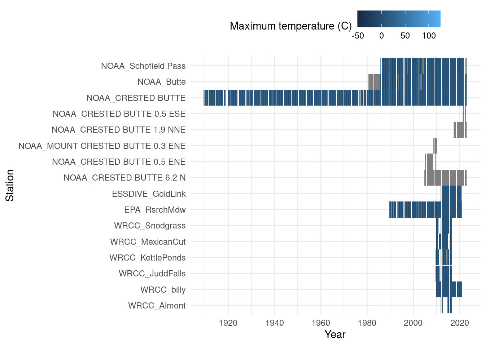
Compare summer precipitation data across stations.
daily_long_7am %>% mutate(yr = year(date)) %>%
filter(yday(date) >100, yday(date) < 240, yr %in% 2018:2020) %>%
ggplot(aes(x=yday(date), y=prcp_mm, color=stations_name[id], shape=ground_covered)) +
geom_point() + facet_wrap(vars(yr)) + scale_color_manual(values=stations_pal) + #ncol=1
labs(x="Day of year", y = "Precipitation (mm)", color="Station", shape="Snow cover") +
theme(legend.position = "top")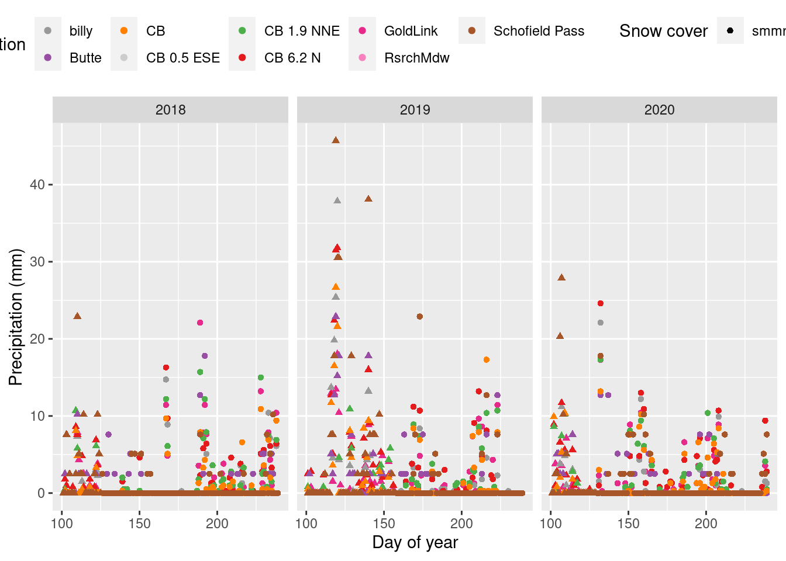
ggcorr(daily_all_7am %>% filter(ground_covered=="smmr") %>%
select(-c(date, ground_covered)) %>% rename_with(~ stations_source_name[.x]),
layout.exp=0.5, geom="tile", label_size=3, label=T, name="r", hjust = .9, size = 2.5)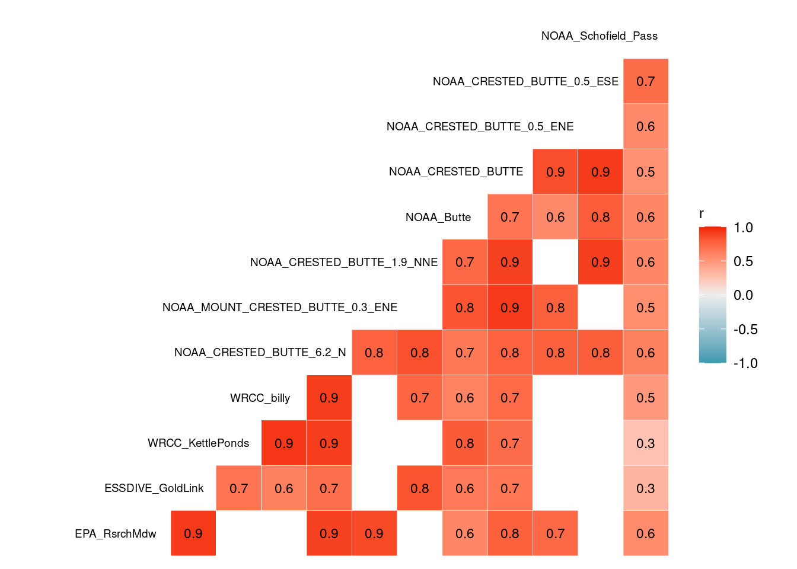
precip_max <- 50
scatter_continuous <- function (data, mapping, method="p", use="pairwise", ...) {
corr <- cor(eval_data_col(data, mapping$x), eval_data_col(data, mapping$y), method=method, use=use)
colFn <- colorRampPalette(c("blue", "white", "red"), interpolate ='spline')
fill <- colFn(100)[findInterval(corr, seq(-1, 1, length=100))]
ggally_smooth(data = data, mapping = mapping, ..., method = "loess", color="blue", se=F, span=0.3) +
ggplot2::annotate("text", x=40, y=10, label = round(corr,2))+
theme_classic() + theme(panel.background = element_rect(fill=fill)) +
scale_shape_manual(values=c(1,2))+
coord_cartesian(xlim=c(0,precip_max), ylim=c(0,precip_max)) + geom_abline(slope=1, intercept=0)+
scale_x_continuous(breaks=seq(0,precip_max, by=precip_max/5))+
scale_y_continuous(breaks=seq(0,precip_max, by=precip_max/5))
}
facethist_combo <- function (data, mapping, ...) {
ggally_facethist(data = data, mapping = mapping, binwidth=precip_max/50,...) +
coord_cartesian(xlim=c(0,precip_max)) + scale_x_continuous(breaks=seq(0,precip_max, by=precip_max/5))
}
corrplot_7am <- ggpairs(daily_all_7am %>% filter(ground_covered=="smmr") %>%
select(-c(date, ground_covered)) %>% rename_with(~ stations_name[.x]),
lower=list(continuous=wrap(scatter_continuous), na="blank"),
upper=list(continuous=wrap(scatter_continuous), na="blank"))
ggsave("images_weather/corrplot_7am.pdf", corrplot_7am, device=cairo_pdf, height=10, width=12)EPA precip data from the Research Meadow ends in 2011 and has some small gaps that need to be filled in to get accurate summer totals.
# EPA_billy_daily_model <- lm(GTH161 ~ US1COGN0018:ground_covered + 0, data=daily_all_7am)
# EPA_CB_daily_model <- lm(GTH161 ~ USC00051959:ground_covered + 0, data=daily_all_7am)
#
# daily_filled_7am <- daily_all_7am %>%
# mutate(EPA_NOAA_source = ifelse(is.na(GTH161), ifelse(!is.na(US1COGN0018), "US1COGN0018",
# ifelse(!is.na(USC00051959), "USC00051959", NA)), "GTH161"),
# EPA_NOAA_filled = ifelse(is.na(GTH161), ifelse(!is.na(US1COGN0018), predict(EPA_billy_daily_model),
# ifelse(!is.na(USC00051959), predict(EPA_CB_daily_model), NA)), GTH161))
monthly_all_7am <- daily_all_7am %>% group_by(yr = year(date), mo = month(date)) %>%
summarize(across(-c(date, ground_covered),
~ ifelse(sum(is.na(.x))>5, NA, sum(.x, na.rm=T))), .groups="drop") %>% #tolerate 5 missing days
arrange(yr, mo)
library(gridExtra)
grid.arrange(
ggplot(daily_all_7am, aes(y=GTH161, x= US1COGN0018, color=ground_covered)) + coord_fixed()+
geom_point(shape=1) + geom_smooth(span=0.3, se=F) + geom_smooth(method="lm", se=F) + geom_abline(intercept=0, slope=1) +
stat_poly_eq(formula = y ~ x + 0, aes(label = paste(..eq.label..,"x", ..rr.label.., sep = "~~~")), parse = T) +
labs(color="Snow cover", y=stations_source_name["GTH161"], x=stations_source_name["US1COGN0018"], title="Daily totals"),
ggplot(monthly_all_7am %>% mutate(season=factor(c("Oct-May","Jun-Sept"))[1+mo %in% 6:9]),
aes(y=GTH161, x= US1COGN0018, color=season)) + coord_fixed()+
geom_point(shape=1) + geom_smooth(span=0.6, se=F) + geom_smooth(method="lm", formula= y ~ x + 0, se=F) + geom_abline(intercept=0, slope=1) +
stat_poly_eq(formula = y ~ x + 0, aes(label = paste(..eq.label..,"x", ..rr.label.., sep = "~~~")), parse = T) +
labs(color="Season", y=stations_source_name["GTH161"], x=stations_source_name["US1COGN0018"], title="Monthly totals"))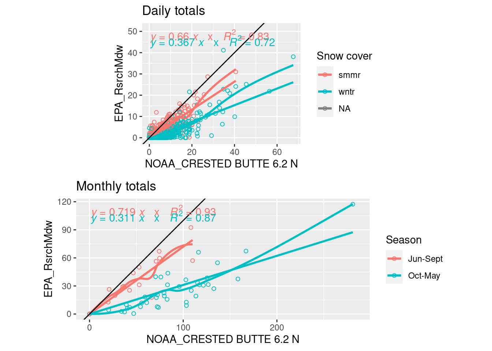
grid.arrange(
ggplot(daily_all_7am, aes(y=GTH161, x= USC00051959, color=ground_covered)) + coord_fixed()+
geom_point(shape=1) + geom_smooth(method="lm", se=F) + geom_abline(intercept=0, slope=1) +
stat_poly_eq(formula = y ~ x + 0, aes(label = paste(..eq.label..,"x", ..rr.label.., sep = "~~~")), parse = T) +
labs(color="Snow cover", y=stations_source_name["GTH161"], x=stations_source_name["USC00051959"], title="Daily totals"),
ggplot(monthly_all_7am %>% mutate(season=factor(c("Oct-May","Jun-Sept"))[1+mo %in% 6:9]),
aes(y=GTH161, x= USC00051959, color=season)) + coord_fixed()+
geom_point(shape=1) + geom_smooth(span=0.6, se=F) + geom_smooth(method="lm", formula= y ~ x + 0, se=F) + geom_abline(intercept=0, slope=1) +
stat_poly_eq(formula = y ~ x + 0, aes(label = paste(..eq.label..,"x", ..rr.label.., sep = "~~~")), parse = T) +
labs(color="Season", y=stations_source_name["GTH161"], x=stations_source_name["USC00051959"], title="Monthly totals"))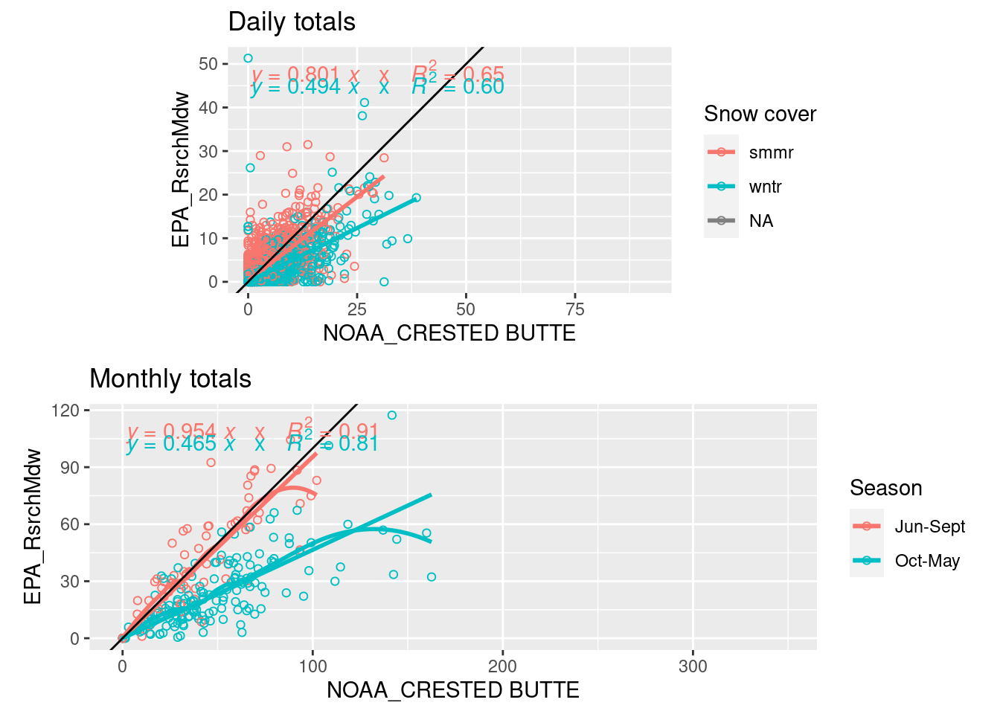
ggplot(daily_all_7am, aes(y=US1COGN0018, x= USC00051959, color=ground_covered)) + coord_fixed()+
geom_point(shape=1) + geom_smooth(method="lm", se=F) + geom_abline(intercept=0, slope=1) +
stat_poly_eq(formula = y ~ x + 0, aes(label = paste(..eq.label..,"x", ..rr.label.., sep = "~~~")), parse = T) +
labs(color="Snow cover", y=stations_source_name["US1COGN0018"], x=stations_source_name["USC00051959"], title="Daily totals")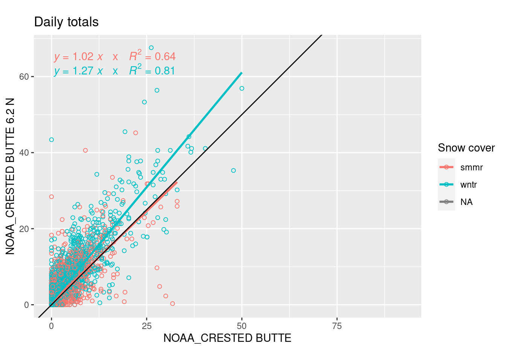
This method uses the ratio between the average annual precipitation at each station to fill in missing values.
# total summer or winter precip relative to CB station
# calculated as daily average for each station across the season, dropping missing values
relative_to_CB <- daily_all_7am %>% drop_na(ground_covered) %>%
group_by(year=year(date), ground_covered) %>% summarize(across(-c(date), ~mean(.x, na.rm=T)/mean(USC00051959, na.rm=T)))
relative_to_CB %>% pivot_longer(-c(year, ground_covered), names_to="id", values_to="prcp_rel_CB") %>% drop_na(prcp_rel_CB) %>%
ggplot(aes(y=stations_source_name[id], x=prcp_rel_CB, color=ground_covered))+
geom_vline(xintercept=1) + geom_boxplot() + scale_x_continuous(breaks=0:6, limits=c(0,4.1))+
labs(x="Mean daily precipitation relative to Crested Butte", y="", color="Snow cover") + theme(legend.position = "top")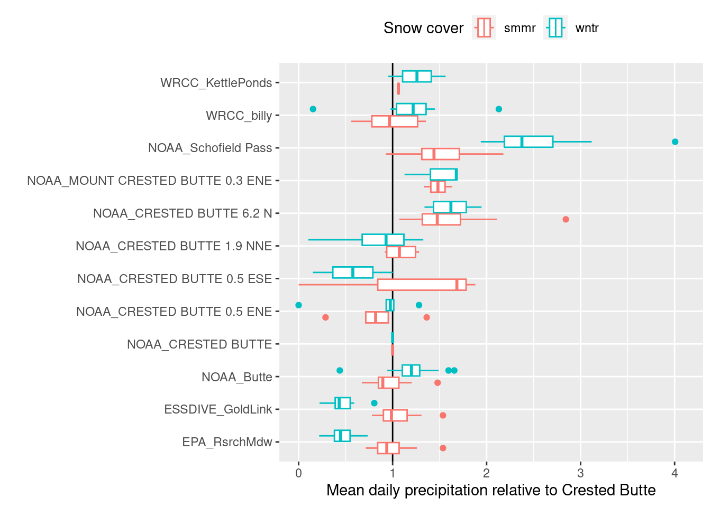
relative_to_CB %>% pivot_longer(-c(year, ground_covered), names_to="id", values_to="prcp_rel_CB") %>% drop_na(prcp_rel_CB) %>%
#group_by(year, ground_covered) %>% summarize(prcp_rel_CB=mean(prcp_rel_CB)) %>%
ggplot(aes(color=stations_name[id], x= year, y=prcp_rel_CB, linetype=ground_covered))+ geom_line(size=1)+
scale_color_manual(values=stations_pal)+ ylim(c(0,4.1))+
labs(x="Mean daily precipitation relative to Crested Butte", y="", color="Snow cover") + theme(legend.position = "top")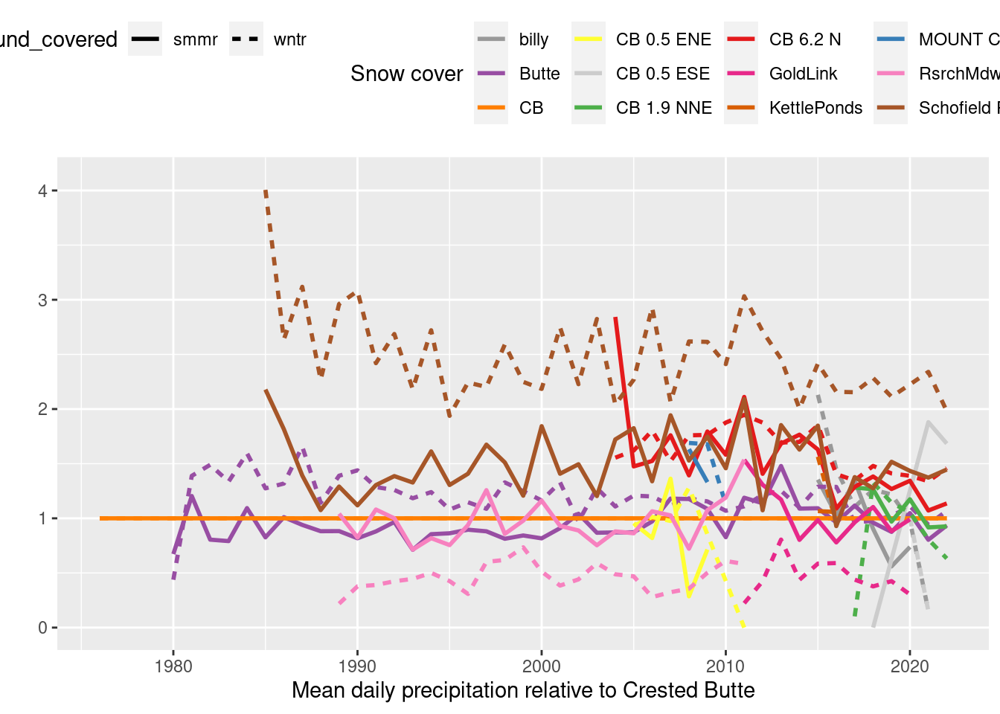
EPA_CB_summer_factor <- relative_to_CB %>% filter(ground_covered=="smmr") %>% drop_na(GTH161) %>% pull(GTH161) %>% mean
daily_filled_7am <- daily_all_7am %>%
mutate(EPA_NOAA_source = ifelse(is.na(GTH161), ifelse(!is.na(USC00051959), "USC00051959", "missing"), "GTH161"),
EPA_NOAA_filled = ifelse(is.na(GTH161), ifelse(!is.na(USC00051959), USC00051959*EPA_CB_summer_factor, NA), GTH161))
save(daily_filled_7am, file="data/daily_all.rda")
monthly_filled_7am <- daily_filled_7am %>% group_by(yr = year(date), mo = month(date)) %>%
summarize(across(-c(date, ground_covered, EPA_NOAA_source),
~ ifelse(sum(is.na(.x))>5, NA, sum(.x, na.rm=T))), .groups="drop") %>% #tolerate 5 missing days
arrange(yr, mo)
ggplot(daily_filled_7am %>% mutate(year=year(date)) %>% filter(year>=1989), aes(x=yday(date))) +
facet_wrap(vars(year)) +
geom_line(aes(y=40-10*as.integer(ground_covered))) +
geom_point(aes(y=EPA_NOAA_filled, color=stations_name[EPA_NOAA_source]), size=0.5) +
scale_color_manual(values=stations_pal)+
guides(color=guide_legend(override.aes = list(size=3)))+
labs(x="Day of year", y="EPA/NOAA precipiation (mm)", color="Filled from") +
theme_minimal() + theme(legend.position="top", panel.spacing = unit(0,"pt"),
panel.grid.minor=element_blank(), panel.grid.major.x=element_blank())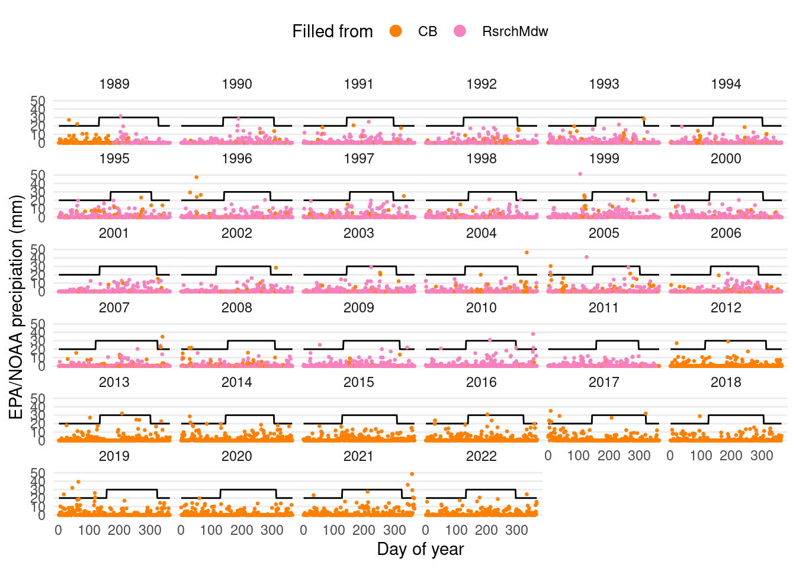
monthly_filled_7am %>% filter(yr>=2004) %>%
pivot_longer(-c(yr,mo), names_to="id", values_to="prcp_mm") %>%
ggplot(aes(x=mo*30.4-15.2, y=prcp_mm, color=stations_name[id])) + facet_wrap(vars(yr)) + #place points at month midpoint
#geom_rect(data=waterdates %>% pivot_wider(names_from=precip_treatments, values_from=c(day, date)) %>% mutate(yr=factor(year)),
# aes(xmin=day_started, xmax=day_ended, ymin=0, ymax=water_addition_per_month_mm), inherit.aes=F,
# fill=water_pal["Addition"])+
geom_line() + geom_point()+
geom_line(data=daily_all_7am %>% mutate(yr=year(date)) %>% filter(yr>=2004),
aes(x=yday(date), y=20-20*as.integer(ground_covered)), color="black") +
labs(y="Monthly precipitation (mm)", x="Day of the year, with snowmelt and first snow dates", color="Station") +
theme(legend.position="top") + coord_cartesian(ylim=c(0,200)) + scale_color_manual(values=stations_pal)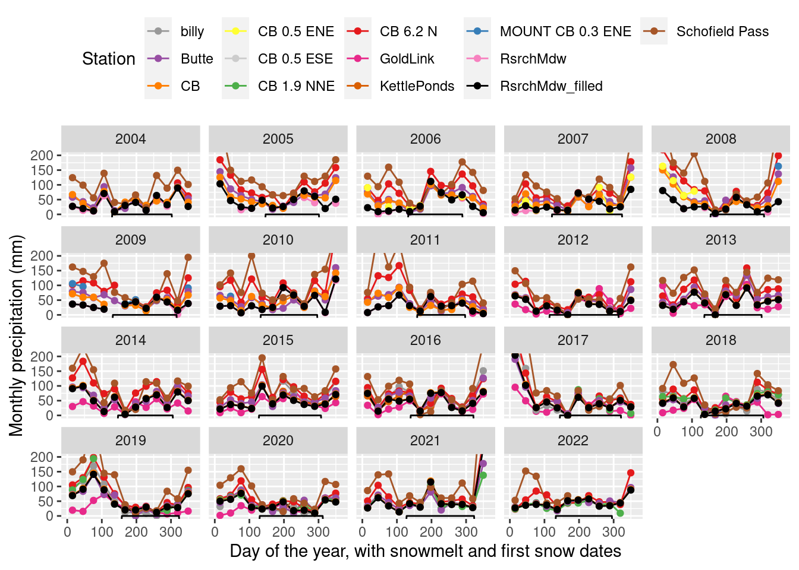
precip_max <- 250
corrplot_monthly_7am <- ggpairs(monthly_all_7am %>% filter(mo %in% 6:9) %>%
select(-c(yr, mo)) %>% rename_with(~ stations_name[.x]),
lower=list(continuous=wrap(scatter_continuous), na="blank"),
upper=list(continuous=wrap(scatter_continuous), na="blank"))
ggsave("images_weather/corrplot_monthly_7am.pdf", corrplot_monthly_7am, device=cairo_pdf, height=10, width=12)
ggplot(monthly_all_7am, aes(y=GTH161,x= USC00051959, color=ifelse(mo %in% 6:9,mo,"Oct - May"))) + geom_point() + geom_smooth(method="lm", se=F) + geom_abline(intercept=0, slope=1) + labs(color="Month")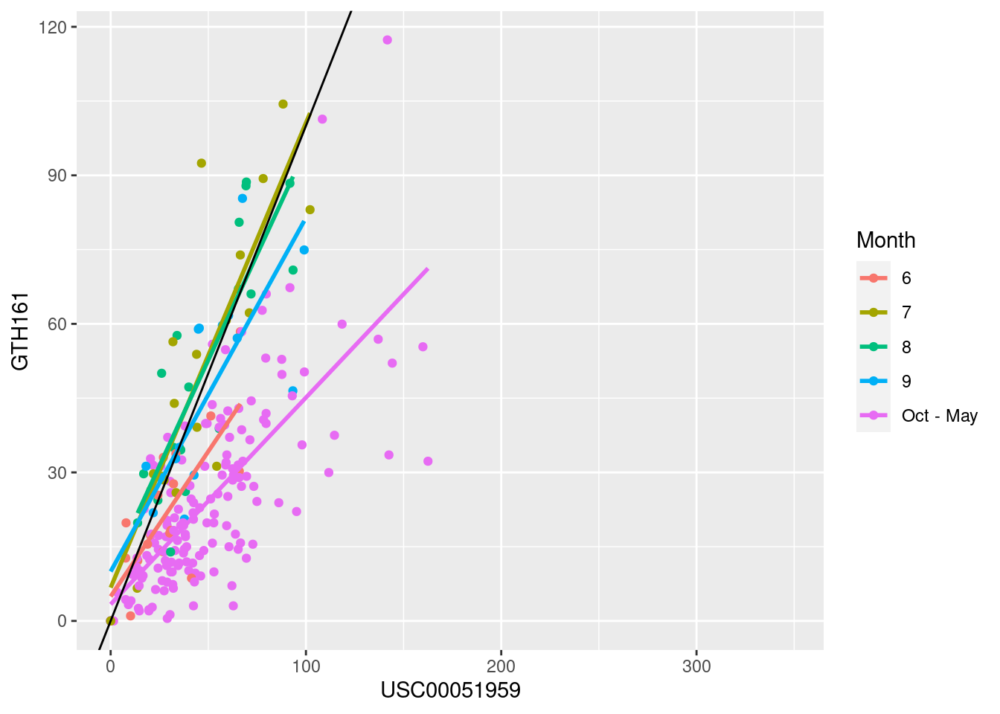
monthly_filled_7am %>% filter(yr >= 1989, mo %in% 5:9) %>%
ggplot(aes(x=mo, y=EPA_NOAA_filled)) + geom_smooth(span=0.5, color="black") +
geom_line(aes(color=ifelse(yr>=2018, "study period (est from CB)", ifelse(yr>=2012,"est from CB","gap-filled EPA data")), group=yr)) +
geom_point(x=7, y=EPA_89_06_July_avg_mm)+ scale_y_continuous(limits=c(0,100))+
geom_text(aes(label=ifelse(yr>=2018, yr, ""))) +
labs(y="Monthly precipitation (mm)", x="Month", title="EPA/NOAA summer precipitation",
subtitle="Black dot is mean July precipitation 1989-2006", color="Data filling") + theme(legend.position = "top")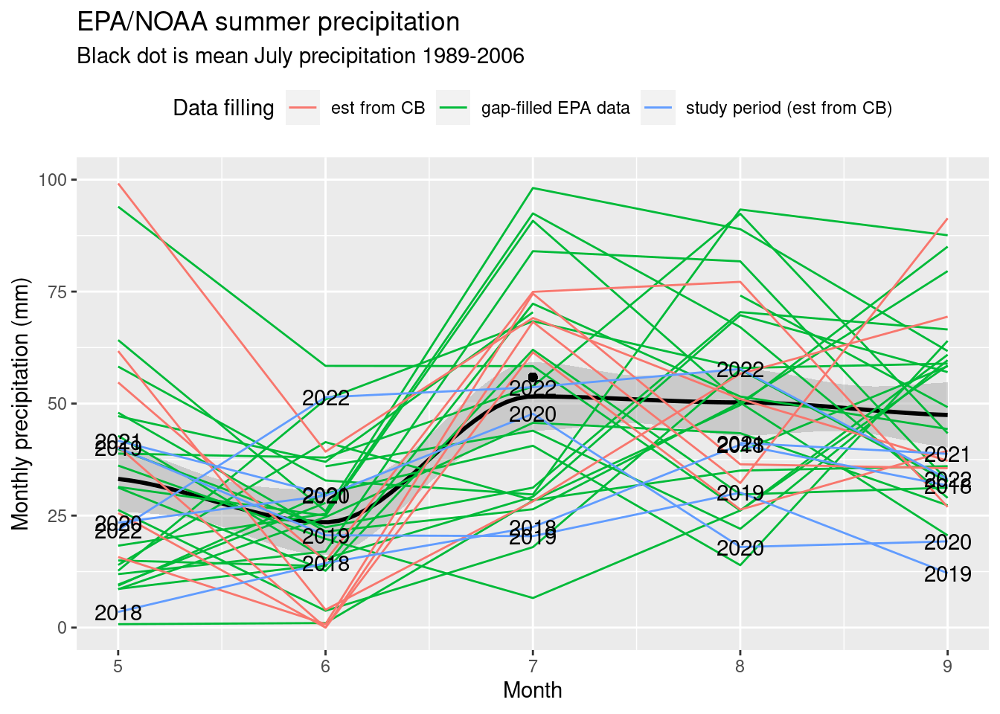
monthly_filled_7am %>% filter(yr >= 1989, mo %in% 5:9) %>% ggplot(aes(x=yr, color=factor(mo), group=mo, shape=ifelse(yr>=2018, "study period (est from CB)", ifelse(yr>=2012,"est from CB","gap-filled EPA data")), y=EPA_NOAA_filled)) +
geom_vline(xintercept=2011.5) +geom_point() + geom_smooth(se=F, span=0.7) +
scale_shape_manual(values=c(1,2,19)) + scale_y_continuous(limits=c(0,100))+
labs(x="Year",y="EPA Research Meadow monthly precipitation (mm)", color="Month", shape="Data filling") +
geom_segment(data=monthly_filled_7am %>% filter(mo %in% 5:9, yr <= 2007, yr >= 1989,) %>%
group_by(mo) %>% summarize(mean_precip=mean(EPA_NOAA_filled)),
aes(x=1989, xend=2006, y=mean_precip, yend=mean_precip, color=factor(mo)), inherit.aes=F, size=1) 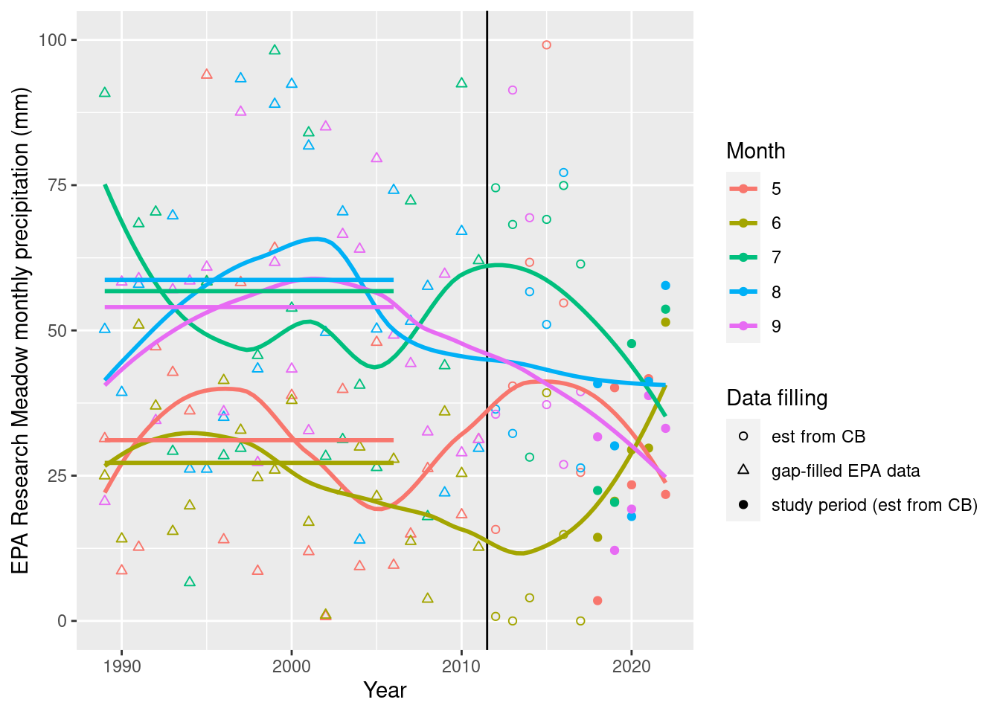
Combined EPA Research Meadow / NOAA Crested Butte dataset from summers 1990-2020
daily_filled_7am %>% filter(year(date)>1989, year(date)<2021) %>%
mutate(julian = yday(date), decade = factor(floor(year(date)/10)*10), decade = recode(decade, "2020"="2010")) %>%
group_by(julian, decade) %>%
summarize(EPA_NOAA_filled = mean(EPA_NOAA_filled, na.rm=T), ground_covered=mean(as.integer(ground_covered), na.rm=T)-1) %>%
ggplot(aes(y=EPA_NOAA_filled, x=julian, color=decade)) +
geom_smooth(span=0.15, se=F)+ geom_point(shape=1, alpha=0.5) + geom_line(aes(y=ground_covered*2), size=0.75) +
labs(x="Day of year", y="Mean EPA/NOAA precipiation (mm)", color="Decade", title="Snowmelt and monsoon timing by decade") +
scale_color_brewer(palette = "Set1", direction = -1) + theme_minimal()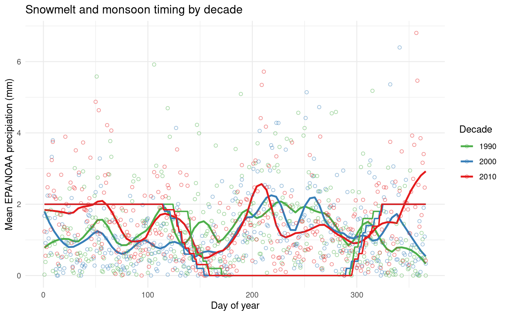
daily_filled_7am %>% filter(year(date)>1989, year(date)<2021, ground_covered=="smmr", EPA_NOAA_filled > 0) %>%
mutate(decade = factor(floor(year(date)/10)*10), decade = recode(decade, "2020"="2010")) %>% group_by(decade) %>%
ggplot(aes(x=EPA_NOAA_filled, color=decade)) + geom_density() +
labs(x="EPA/NOAA precipiation (mm)", y="Proportion", color="Decade", title="Intensity spectrum of summer rainstorms > 0 mm") +
scale_color_brewer(palette = "Set1", direction = -1) +
scale_x_continuous(breaks=scales::breaks_extended(10)) + theme_minimal()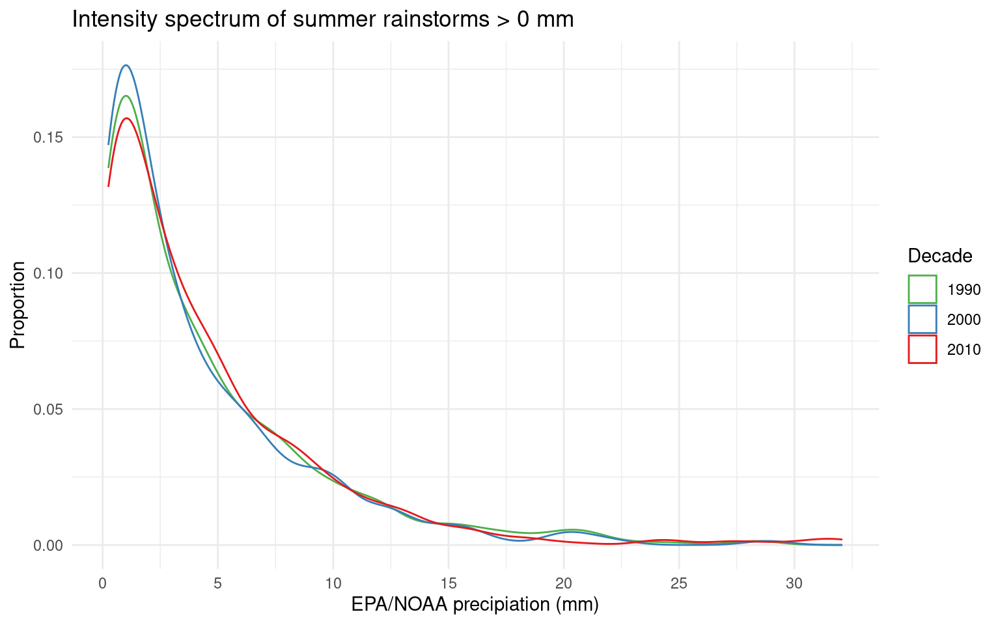
summary_EPA_NOAA <- daily_filled_7am %>% filter(year(date)>1989, year(date)<2021, EPA_NOAA_filled > 2) %>%
mutate(drought_days = c(0,diff(date)), year=year(date)) %>% filter(ground_covered=="smmr") %>%
select(year, date, drought_days) %>% group_by(year) %>% summarize(max_drought_days_2mm = max(drought_days)) %>%
left_join(daily_filled_7am %>% filter(year(date)>1989, year(date)<2021, ground_covered=="smmr") %>% group_by(year=year(date)) %>%
summarize(snow_free_days = n(),
rain_days_2mm = sum(EPA_NOAA_filled > 2, na.rm=T),
prop_rain_days_2mm = rain_days_2mm / snow_free_days,
max_precip_mm = max(EPA_NOAA_filled, na.rm=T),
avg_precip_mm = mean(EPA_NOAA_filled, na.rm=T),
total_precip_mm = sum(EPA_NOAA_filled, na.rm=T)))
summary_names <- c(snow_free_days = "Snowmelt to first permanent snowfall (days)",
max_drought_days_2mm="Longest drought < 2 mm/day (days)",
rain_days_2mm = "Days with > 2 mm precipitation",
prop_rain_days_2mm = "Proportion days > 2 mm precipitation",
max_precip_mm = "Maximum precipitation (mm/day)",
avg_precip_mm = "Average precipitation (mm/day)",
total_precip_mm = "Total precipitation (mm)")
summary_EPA_NOAA %>% pivot_longer(!year) %>% filter(!name %in% c("rain_days_2mm","max_precip_mm","total_precip_mm")) %>%
ggplot(aes(y=value, x=year))+
facet_wrap(vars(name), scales="free_y", labeller=as_labeller(summary_names)) +
annotate("rect", xmin=2017.5, xmax=2020.5, ymin=-Inf, ymax=Inf, fill="lightblue")+
geom_smooth(method="lm", color="black", se=F) + geom_point(color="grey60") + labs(x="Year", y="") +
stat_poly_eq(formula = y ~ x, aes(label = paste(..eq.label.., ..rr.label.., ..p.value.label.., sep = "~~~")), parse = T) +
theme_minimal() +theme(axis.title.y= element_blank(), text=element_text(color="black", size=14),
axis.text = element_text(color="black"), panel.border = element_rect(fill=NA, colour = "black"))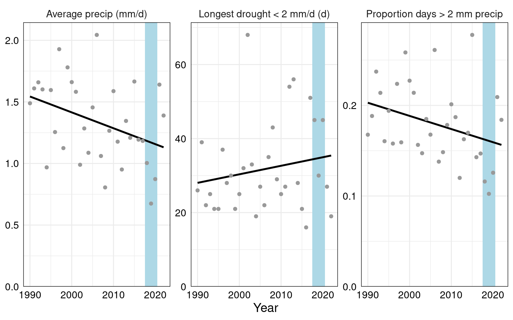
summary_EPA_NOAA %>% summarize(across(-year, mean, na.rm=T)) %>% kable(caption = "Averages 1990-2020")| max_drought_days_2mm | snow_free_days | rain_days_2mm | prop_rain_days_2mm | max_precip_mm | avg_precip_mm | total_precip_mm |
|---|---|---|---|---|---|---|
| 31.70968 | 167.7097 | 29.83871 | 0.1785583 | 21.74889 | 1.324491 | 220.3063 |
All data from NOAA Crested Butte station.
#weird long run of high precipitation in Sept 1927
daily_NOAA %>% filter(id=="USC00051959", year(date)>1909, year(date)!=1927) %>%
mutate(julian = yday(date), decade = factor(floor(year(date)/10)*10), decade = recode(decade, "2020"="2010")) %>%
group_by(julian, decade) %>% summarize(prcp_mm = mean(prcp_mm, na.rm=T)) %>%
ggplot(aes(y=prcp_mm, x=julian, color=decade)) + geom_smooth(span=0.15, se=F)+
labs(x="Day of year", y="Mean Crested Butte precipiation (mm)", color="Decade", title="Snowmelt and monsoon timing by decade") +
scale_color_viridis_d(option="inferno") + coord_cartesian(xlim=c(120,270)) + theme_dark()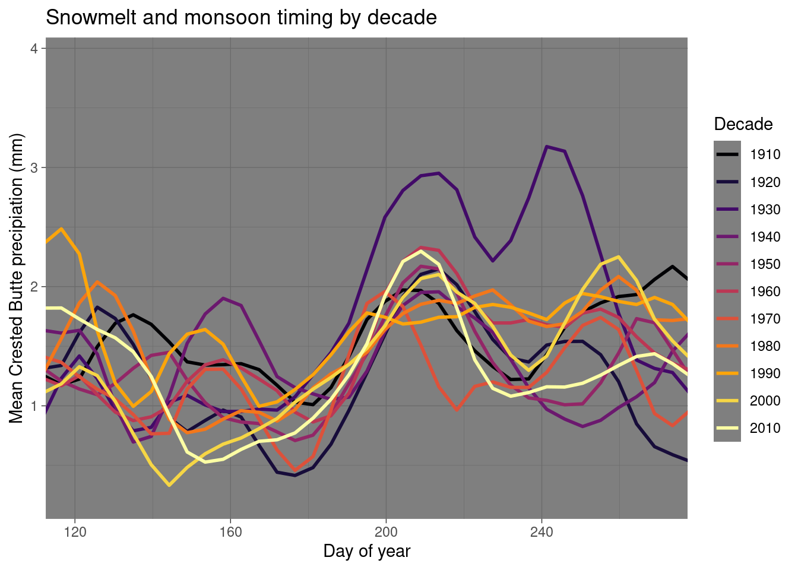
daily_NOAA %>% filter(id=="USC00051959", year(date)>1909, year(date)!=1927,yday(date)>=120, yday(date)<= 270, prcp_mm > 0) %>%
mutate(decade = factor(floor(year(date)/10)*10), decade = recode(decade, "2020"="2010")) %>% group_by(decade) %>%
ggplot(aes(x=prcp_mm, color=decade)) + geom_density() +
labs(x="Crested Butte precipiation (mm)", y="Proportion", color="Decade",
title="Intensity spectrum of rainstorms > 0 mm \n(day 120-270, Crested Butte)") +
scale_color_viridis_d(option="inferno") + coord_cartesian(xlim=c(0,40)) + theme_dark()daily_NOAA %>% filter(id=="USC00051959", year(date)>1909, year(date)!=1927,prcp_mm > 2) %>%
mutate(drought_days = c(0,diff(date)), year=year(date)) %>% filter(yday(date)>=120, yday(date)<= 270,) %>%
select(year, date, drought_days) %>% group_by(year) %>% summarize(max_drought_days = max(drought_days)) %>%
ggplot(aes(x= year, y=max_drought_days)) + geom_smooth(span=0.5) +geom_point() +
labs(x="Year", y="Consecutive drought days with < 2 mm daily precipitation \n(day 120-270, Crested Butte)")daily_NOAA %>% filter(id=="USC00051959", year(date)>1909, year(date)!=1927,yday(date)>=120, yday(date)<= 270, prcp_mm > 2) %>%
count(year=year(date)) %>%
ggplot(aes(x= year, y=n)) + geom_smooth(span=0.5) + geom_point() +
labs(x="Year", y="Days with > 2 mm daily precipitation (day 120-270, Crested Butte)")daily_NOAA %>% filter(id=="USC00051959", year(date)>1909, year(date)!=1927, yday(date)>=120, yday(date)<= 270) %>%
group_by(year=year(date)) %>% summarize(total_mm=sum(prcp_mm, na.rm=T)) %>%
ggplot(aes(x= year, y=total_mm)) + geom_smooth(span=0.5) + geom_point() +
labs(x="Year", y="Total precipitation (mm, day 120-270, Crested Butte)")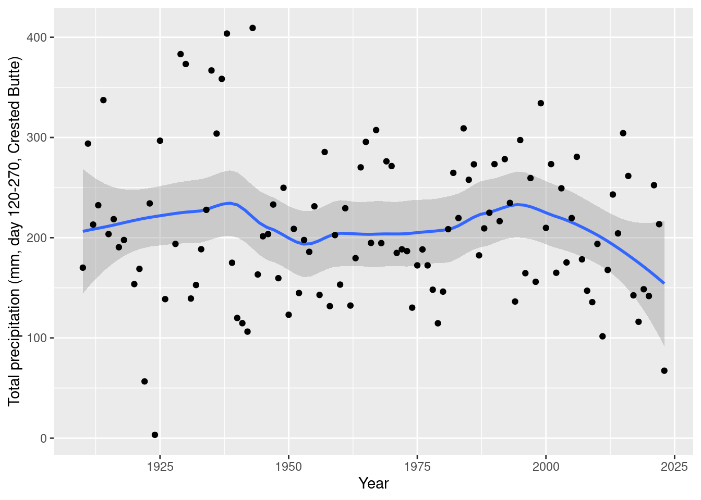
daily_NOAA %>% filter(id=="USC00051959", year(date)>1909, yday(date)>=120, yday(date)<= 270) %>%
group_by(year=year(date)) %>% summarize(tmax_mean=mean(tmax_C, na.rm=T)) %>%
ggplot(aes(x= year, y=tmax_mean)) + geom_smooth(span=0.3) + geom_point() +
labs(x="Year", y="Average maximum temperature (C, day 120-270, Crested Butte)")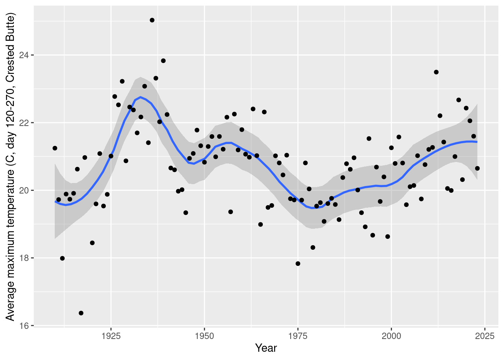
daily_NOAA %>% filter(id=="USC00051959", year(date)>1909, yday(date)>=120, yday(date)<= 270) %>%
group_by(year=year(date)) %>% summarize(tmin_mean=mean(tmin_C, na.rm=T)) %>%
ggplot(aes(x= year, y=tmin_mean)) + geom_smooth(span=0.3) + geom_point() +
labs(x="Year", y="Average minimum temperature (C, day 120-270, Crested Butte)")ggplot(daily_GTH161, aes(y=TEMPERATURE, x= date, color=month(date) %in% 5:7))+ geom_line(aes(group=1)) + labs(color="May-July", title="GTH161 mean temp")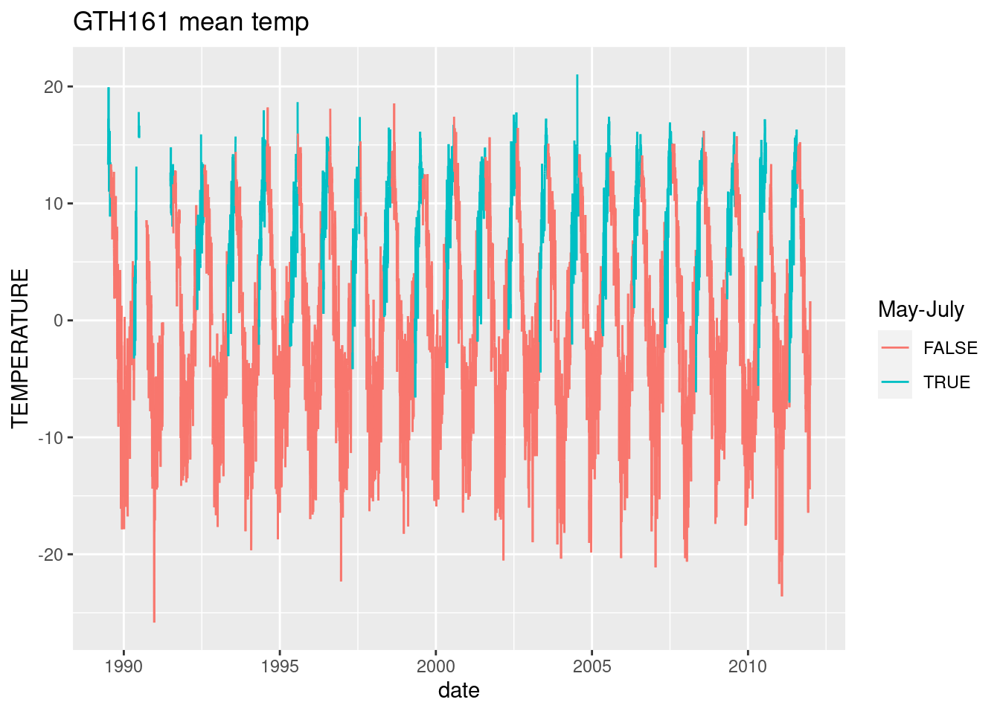
daily_GTH161 %>% filter(month(date) %in% 5:7) %>% group_by(year=year(date)) %>% summarize(days_missing=sum(is.na(TEMPERATURE))) %>% print(n=23)#too much missing temp data# A tibble: 23 x 2
year days_missing
<dbl> <int>
1 1989 0
2 1990 58
3 1991 61
4 1992 9
5 1993 0
6 1994 2
7 1995 6
8 1996 0
9 1997 8
10 1998 17
11 1999 0
12 2000 19
13 2001 14
14 2002 0
15 2003 0
16 2004 16
17 2005 0
18 2006 9
19 2007 0
20 2008 0
21 2009 0
22 2010 0
23 2011 0ggplot(daily_NOAA %>% filter(id=="USC00051959"), aes(y=tmax_C, x= date))+ geom_line() + labs("CB max temp") #CB station does not have mean temp, only max and min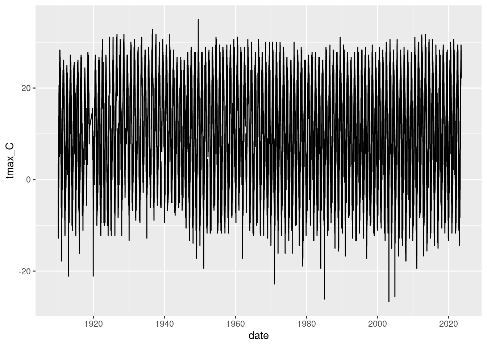
daily_NOAA %>% filter(id=="USC00051959", year(date)>1909, month(date) %in% 5:7) %>% group_by(year=year(date)) %>%
summarize(tmax_C_mean = mean(tmax_C, na.rm=T), days_missing=sum(is.na(tmax_C))) %>% ggplot(aes(x=year, y=tmax_C_mean)) + geom_point() + geom_smooth()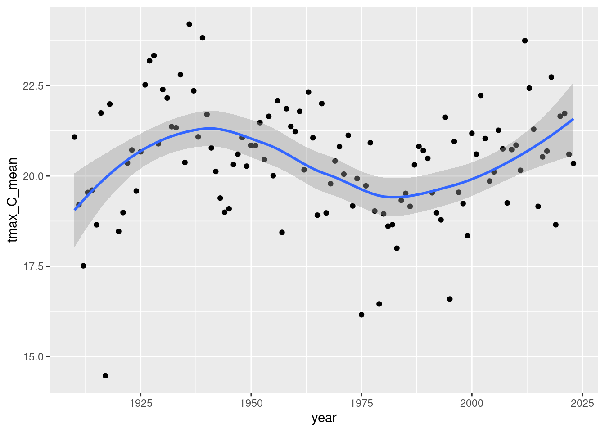
groundcover %>% mutate(first_snow_day=first_snow_day-365) %>%
pivot_longer(ends_with("day"), names_to="threshold", values_to="day") %>% drop_na(day) %>% select(-starts_with("first")) %>%
mutate(threshold = fct_reorder(factor(threshold),day, na.rm=T, .desc=T)) %>%
ggplot(aes(x=year, y=day, color=threshold)) +
geom_line(aes(group=year), size=2)+ geom_smooth( method="lm", se=F) +geom_point() +
scale_x_continuous(minor_breaks = 1976:2020, position = "top") + scale_y_continuous(n.breaks=10)+
scale_color_grey(labels=function(x) str_to_sentence(str_replace_all(x, "_", " ")), start=0, end=0.85) +
labs(x="Year", y="Day of year", color="Threshold") + theme_minimal()